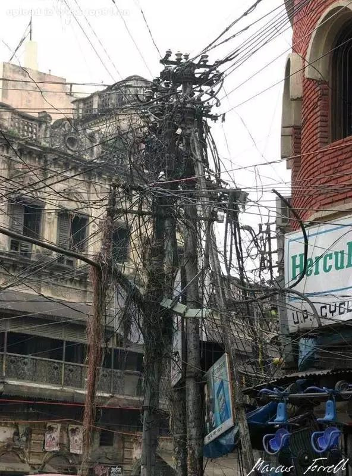
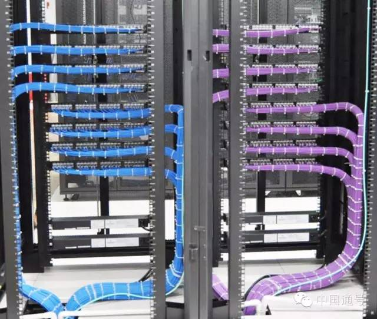

项目管理
一，概述
项目管理，管理学术语，是指在项目活动中运用专门的知识、技能、工具和方法，它使项目能够实现或超过项目干系人的需求和期望。
项目管理是对一些与成功地达成一系列目标相关的活动(譬如任务)的整体。这包括策划, 进度计划和维护组成项目的活动的进展。用最简单的话来说,项目管理就是一门在项目生命周期中，把失败的风险保持到尽可能最小学科。一个项目失败的风险主要来源于不确定性在项目各个阶段的存在。
另一种观点是：项目管理是一门的以资源(时间,金钱,人力,空间,等)的使用达到最优化的方式来定义和达到目标的学科。
项目管理常常是一个人–项目经理的工作范围和责任。 这个人很少直接参与具体的生产活动,相反,更注重维护整个项目的进展和各方面人士的生产性的互相交流,这样来降低项目失败的总体风险。
软件过程 PowerDesign Rose Visio PlayCase
专业实践 软件演化 [[专业应用 软件工具 软件方法，信息建模，UML方法，用例方法，结构化分析（数据流程图） 软件过程，RUP统一过程，XP极限编程，PlayCase全程建模，
二，什么是项目?
从字面上理解，一个项目可以简单到指做一顿早餐。但从项目管理的实际操作的场景看,一个项目被更好的定义为一种有独立的开始时间，结束时间，有一定复杂性的工作。与此不同的是，如生产线，它是一种没有结束的持续的过程。
典型的项目可以包含一座建筑的工程和施工，或设计，编码，测试一个计算机软件和为其编写文档。 计算机软件的设计,编码,测试和文档，或一种新药的科学研发和临床试验等。一个项目的工期是指从它开始到完成的持续时间，可以是数天，数月，甚至数年。
任何一件有目标的活动都可以叫做项目。这个目标是明确的，有限制的。 项目管理学的目标包括三个方面：时间，成本，成果。
三，方法
通常来说,现在的项目管理有两种方法： 传统的方法需要识别一系列需要完成的步骤。 相对的是敏捷软件开发方法，项目被看作一些相对小的任务，而不是一个完整的过程。敏捷软件开发的目的是尽量小的管理费用来制定标准，审核，文档，报告，会议和许可。
[编辑]
传统的方法
在传统的项目管理方法中,项目的开发被分成5个阶段:
1. 项目启动
2. 项目策划
3. 项目生产
4. 项目监测
5. 项目完成
不是每个项目都必须经过以上每一个阶段，因为有些项目可能会在达到完成阶段之前被停职。有些项目不需要策划或者监测。有的项目需要重复多次阶段2，3，4。
许多工业也使用这些阶段的变种。例如在砖混结构的设计中，项目通常包含以下步骤：预计划，概念设计，初步设计, 深化设计，工程图(或合同文本)，和施工管理。尽管在不同的工业中阶段的名称不同,实际的阶段通常是一些问题解决的基本步骤: 定义问题,权衡选项,选择路径,实现和评估.
项目管理试图获得对5个变量的控制：
时间
成本
质量
范围
风险
有三个变量可以由内部或者外部的客户提供. 其余的变量则由项目经理,理想地基于一些可靠的估计技术来设定。这些变量的最终的值还需要在项目管理人员与客户的协商过程确定。通常，时间，成本，质量和范围将以合同的方式固定下来。
为了从项目开始到自然结束的整个过程中保持控制。 项目经理需要使用各种不同的技术：项目策划，挣值管理，风险管理，进度计划,过程改进等等。
四，项目管理的历史
在冷战的史普托尼克（苏联的第一颗人造卫星）危机之前，项目管理还没有用做一个独立的概念。在危机之后,美国国防部需要加速军事项目的进展以及发明完成这个目标的新的工具（模型）。 在1958年,美国发明了 计划评估和审查审技术（PERT）,作为的北极星导弹潜艇项目。与此同时, 杜邦公司发明了一个类似的模型成为关键路径方法（CPM）。 PERT 后来被工作分解结构（WBS）所扩展. 军事任务的这种过程流和结构很快传播到许多私人企业中。
随着时间的推移,更多的指导方法被发明出来，这些方法可以用于形式上精确地说明项目是如何被管理的。这些方法包括项目管理知识体系（PMBOK），个体软件过程（PSP），团队软件过程（TSP），IBM全球项目管理方法(WWPMM)，PRINCE2. 这些技术试图把开发小组的活动标准化，使其更容易地预测，管理和跟踪。
关键链 是传统的关键路径方法的最新扩充.
项目管理的的批判性研究发现: 许多基于PERT的模型不适合今天的多项目的公司环境. 这些模型大多数适合于大规模,一次性,非常规的项目中. 而当代管理中所有的活动都用项目术语表达。所以,为那些持续几个星期的“项目”（更不如说是任务）使用复杂的模型在许多情形下会导致不必要的代价和低可操作性。因此，项目识别不同的轻量级的模型，比如软件开发的极限编程和Scrum技术。为其他类型项目而进行的极限编程方法的一般化被称为极限项目管理
五，基于过程的管理
项目控制概念的进一步发展是融合了基于过程的管理。这个领域由成熟度模型的使用而得以发展，如CMMi（能力成熟度模型）和ISO/IEC15504 (SPICE - 软件过程改进和能力决断)。 这两种模式已经被世界范围内的组织成功地应用, 以更好地管理项目。为了提高估计的紧缺度，降低成本和预防缺陷，CMMi被广泛用于美国和澳大利亚的国防工业及其分包商,SPICE在欧洲的私人部门的使用正在增长。
六，
参考：
1：关于自定义控件的研发和使用
随着开发项目的增多，一个公司或者一个研发小组都会积累一些常用的控件，如何管理和重用这些控件也是一个非常值得大家讨论和研究的一个问题。在此，我提出我的一些建议。
首先在公司内部，控件必须和源代码一起发布。如果使用的控件功能比较单一，源码也 不是很复杂，建议不要直接引用DLL，而是把这个控件的项目添加到解决方案中。这里有一个原则就是“控件是为了项目服务，但项目不能受制于控件。”。如果项目中直接使用 了控件的源码，那么如果你觉得这个控件用起来不是很爽，那么直接修改它。
如果控件本身逻辑和代码都比较复杂，除非你相信在出现问题时你能找到帮助，或者你能了解其中80％以上代码的含义和使用的算法，否则建议不要使用这种控件。因为使用这种控件往往会成为日后系统维护的泥沼。
2：关于中型项目的人员配备问题
这里我只讨论中型项目。因为截至到目前为止，我没有正真亲历过大项项目，因此没有针对大项项目的发言权。呵呵。任何一个项目，必须保证整个系统体现的是概 念完整的设计理念。概念完整性的受益者将包括最终用户，系统开发者，培训人员。为了保证这种完整性，做出需求确定的必须是少数，甚至一个人。我建议在中型 项目中采用一个项目经理加一个结构师进行需求分析，框架设计。项目经理和结构师必须有非常良好的沟通，包括分析问题的风格，对开发的理解等。PM和结构师 是最早参与项目的两个人，他们之间的不一致会直接影响项目的开发方向。
这样做有以下几个好处
(1) 因为PM和结构师都了解项目的整体构架，设计理念，即使中途有一个人退出，也不会对项目造成致命的打击。 (2) PM着重对项目的进度，人员安排，成本控制进行管理，而结构师着重对设计理念，系统的可扩展性，和软件质量进行管理。两种管理方式互相制约互相融合，折中出来的设计方案将是最优的。
3：开发文档的建立
一个项目的开发接近尾声了。公司质管部也开始对各类文档开始进行审核。这时候我们往往会突击赶制文档，文档的编制此时也成为令人厌烦的繁重任务。这样产生 的文档往往也是质量非常低劣的。作为一个项目的管理者，如何改变这种状况呢？一个聪明的做法就是在项目启动初期，即刻正式生成若干文档，即使有些文档可能 非常的简单，甚至只有标题。
ok。现在文档的框架有了，接下来就是填空了。随着项目的不断推进，文档的内容也日渐丰富。最重要的是这些文档都是日积月累出来的，这就叫做“化整为零”，“蚂蚁搬家”。噢，后面的那个词好像用的不太恰当。
我建议最小的项目文档集合包括如下几个： (1) 需求文档。没有那个客户会一股脑把他们的需求倒给你。所以这个文档需要不断的补充和完善。 (2) 项目计划。俗话说计划终赶不上变化。因此我们必须不停地修正这个计划。 (3) 框架设计。这个世界上不存在一挫而就的成功的框架设计。修修补补永远是我们软件设计的主题。 (4) 设计元素说明。程序员就位准备动工了，如果你连一张像样的施工图纸说明也不给，那么这么多程序员就准备百花齐放，最终的产品将是典型的四不象。
彻底简化IT:在这样一个商业世界里，必须要建立一个能不断改进的IT系统。对于那些传统的管理者来说，认为构建一个IT系统就像建造一个大仓库：“建立它，然后完工”这样想法的话，前景是很不乐观的。这不再适用于IT，如果你打算建立企业系统，一个不变的、代价昂贵的从上线第一天就过时的系统。反之，如果采取一种“基于途中”开发的方式，你可以取得更多的灵活性，随时根据业务需要而改变，使得IT不再是现有操作的简单平台，而是新的商业功能和品牌的发射场。
*[http://www.ipma.ch/ 国际项目管理协会 （英文）]
*[http://www.pmi.org/ 项目管理学会 （英文）]
*[http://dmoz.org/Business/Management/Project_and_Program_Management/ 开放目录中的项目管理的网站 （英文）].
*[http://www.pmforum.org/prof/standard.htm#STANDARDS/ 项目管理的标准 （英文）]
*[http://www.pmforum.org/library/glossary/index.htm Wideman Comparative Glossary of Project Management Terms （英文）]
*[http://csdl.computer.org/comp/mags/so/2001/05/s5toc.htm 软件开发过程参考文献 （英文）]
*news:alt.projectmng ([http://groups.google.com/groups?group=alt.projectmng Via Google Groups （英文）]) *news:alt.comp.project-management ([http://groups.google.com/groups?group=alt.comp.project-management Via Google Groups （英文）])
安全和变化
除非感到安全，否则人们就不能去迎接变化。
在所有成功的工程中(以及在绝大多数其他有价值的工作中)，变化都是基本的要素之一。
安全感的缺乏会让人们反对变化。
逃避风险是致命的，因为这会让你也得不到与风险同在的利益。
人们可能会因为来自客观世界的直接的恐吓而觉得没有安全感，但是如果察觉到管理者可能滥用权力来惩罚自己，他们也会觉得没有安全感。
负面效应
威胁不是提高业绩最好的方法。
如果分配的时间一开始就不够，不管威胁有多么吓人，工作也无法按时完成。
更糟糕的是，如果目标没有实现，你就必须兑现你的威胁。
管理者必需的身体部位
管理涉及到心、肠胃、灵魂和鼻子。
因此……用心来领导，相信你的肠胃(相信你的预感)，构筑团队的灵魂，训练一个能嗅出谎言的鼻子。
用指挥战争来作为管理的一个比喻
在战役开始的时候，管理者真正的工作已经完成了。
面试和招聘
招聘涉及到所有与管理相关的身体部位：心、灵魂、鼻子和肠胃(但是主要是肠胃)。
l不要试图单独去招聘——两副肠胃远比一副肠胃的两倍要好。l对于新的雇员，让他们承担与以前曾经成功过的同样难度的项目，把有挑战性的目标推迟到下一次。
征求提示：你最希望雇的那个人可能还知道其他很好的人选。
多听，少说。
如果先把材料整理好，那么所有的事情都会进行得更好。
生产力的提高
没有“短期生产力提高”这样的东西。
生产力的提高是来自长期投资的。
任何承诺立刻见效的东西都很可能是江湖游医所卖的万灵油。
风险控制
通过控制风险来管理项目。
为每个项目创建并维护风险统计表。
跟踪根源性的风险，而不只是最后那讨厌的结果。
评估每种风险具体化的概率和可能造成的开销。
对于每种风险，预测标志其具体化的早期征兆。
任命一个风险控制官，这个人不应该维护组织内部“我能行”的态度。
建立简单的(可能是匿名的)通道，让坏消息能传递到高层。
防止失败
(壮士断腕。
(控制住失败比优化成功更能提高你全面的成绩。
(要有闯劲，尽早取消失败的工作。
(除非必要，否则就不要自己去凝聚一个团队：出去找一个已经成型的团队来用。
(保持好的团队在一起(只要他们自己愿意)，以帮助你的继任者避免团队凝聚得慢或者不能凝聚的问题。
(把凝聚在一起的团队——准备好、并且也愿意接受新的工作——作为项目的收获之一。
(项目开始时浪费的一天和最后阶段浪费的一天对项目造成的伤害是同等的。
l有无数种方法可以浪费一天的时间……但是没有任何一种方法可以拿回一天的时间。
开发过程的建模和模拟
将你关于完成工作过程的直觉建模。
在同事的交流中使用这些模型，以便交流、提炼关于项目运转的思想。
用模型来模拟项目的结果。
根据实际的结果来调整模型。
贝琳达告诉他自己在想什么：“这都是为什
么，韦伯斯特?我们在这儿干什么?我已经40多岁了，还是不知道该拿自己怎么办。
人生怎样才能满足?帮助一个刚刚脱离蛮荒的小国家，发展世界级的软件产业，我们
就能满足了吗?这很有趣，我知道，但是有那么有趣吗?有那么重要吗?”
“我想是的。但是我知道你的意思。有时候．我也会想这些。”。
“我们在帮助优秀的年轻人们开创自己体面的职业生涯．并活得有尊严……”
“而且我们没有做任何坏事，没有增加污染，也没有制造军火。”
“是。但是我还是想知道．我到底为什么来这儿的?”
“我不知道。也许有些事情我们永远都不会知道。再说，那又有什么关系呢?”
“有时候，我想做出一番惊天动地的大事业。然而，有些时候，我只想做一个
平凡的小人物，默默地帮助我身边的人。还有些时候，我甚至想做些离经叛道的事
情，让整个世界吓一大跳。”
“是好，是坏。这是个问题。”
“或者二者兼而有之——这就是问题所在。也许我们中的每个人都必须找到自
己的平衡点。你觉得我们的职业选择就这么简单吗，韦伯斯特?发现你自己的心理平
衡点?”
“我喜欢这种说法。我们都是空间中的一个点，三条坐标轴定义了我们的位置。
过三条坐标轴就是这三种生活方式。”
“米开朗其罗在哪个部分?特丽莎妈妈在哪个部分?还有……”
“密尔顿•贝尔利。”
“密尔顿•贝尔利。”
病态的政治
每一天，你都必须准备拿自己的工作打赌．．．．．．．
．．．．．．但是这也不能保证“病态的政治”影响你。
“病态的政治”可能在任何地方出现，哪怕是在最健康的组织里面。
“病态的政治”的特征：对个人权势的渴望超过了组织本身的目标。
即使这种不合理的目标与组织目标背道而驰，它也可能出现。
“病态的政治”最恶劣的副作用：它精简项目变得危险。
度量
度量每个产品的规模
不要执着于单位– 在等待客观度量的时候，先用你自己的主观单位
从所有能得到的原始数据（可计算得软件特性）自己构造度量单位
从已经完成得项目中收集原始数据，以推导出生产力趋向
借助数据库画一条趋势线，把预期工作量作为人造度量值的函数显示出来
现在，针对每个要评估的项目，计算出人造度量单位值，并根据这个值在
趋势线上找到预期工作量值
用生产力趋势周围的干扰水平作为映射的标示
过程和过程改进：
好的过程和持续的过程改进是绝好的目标
它们也是非常自然的目标：优秀的技术工作者一定会关注它们，不
管你是否告诉他们
正式的过程改进程序常需要花钱、花时间；特定的过程改进工作拖
延项目进度。尽管最终会体现出生产力上的收获，它们也不可能抵
消花在过程改进上的时间。
但是，项目有希望从单个的、正确选择的方法改进中得到足够的收
益，并赢回为这次改变付出的时间和金钱。
在项目进行的过程中，不要希望在超过一个方法的范围内实施改进。
多种技术的改进程序（比如说提高整整一个CMM等级）很可能让项目
比不实施这些程序完成得更晚。
标准过程的危险就在于人们可能失去重要的走捷径的机会
特别是对于人员超编的项目，标准过程看上去会很严谨，因为它们
制造出了足够的工作（有用的和无用的），让所有人都忙碌不停。
改变完成工作的方式：
如果不大幅度减少调试的时间，就没办法让项目大幅度提前完成
高速完成的项目用在调试上的时间也成比例地少得多
高速完成的项目用在设计上的时间也成比例地多得多
一条：
如果你不关心别人，不照顾别人，就别想让他们为你做一些不同寻常的
事情。如果要让他们改变，就必须去了解（并赞赏）他们的过去。
压力的效果:
压力之下的人无法更快地思考
增加加班时间只会降低生产力
短期的压力乃至于加班可能是有用的策略，因为它们能使员工集中
精力，并且让他们感到工作的重要性。但是长期的压力肯定是错误
的。
经理之所以会施加那么多的压力，也许是因为他们不知道该做什么，
或者因为其他办法的困难而感到气馁。
最坏的猜测：是用压力和加班的真正原因是为了在项目失败的时候
让所有人看上去能好一点。
愤怒的经理：
管理中的愤怒和耻辱是会传染的。如果高级管理者喜欢骂人，低级
管理者也会有样学样（就像经常被骂得小孩很容易变成爱骂人的父
母）。
管理中的辱骂常被认为是一种刺激，可以让员工提高效率。在“胡
萝卜加大棒”的管理策略中，辱骂是最常见的“大棒”。但是，哪
有人被辱骂之后还能做得更好的?
如果经理使用辱骂得方法来刺激员工，这就表现出经理的无能，而
不是员工的无能。
含糊的规格文档:
规格文档中的含糊隐含着不同的系统参与者之间存在着未解决的冲
突。
如果一份规格文档不包含完整的输入输出列表，那么它就是毫无希
望的，它根本就还没开始说明任何东西。
没有人会告诉你一份规格文档是不是糟糕。人们往往倾向于责备自
己，而不是责备文档。
冲突:
只要在开式过程中有多个参与者，就一定会有冲突存在。
创建、安装系统的业务中特别容易出现冲突。
绝大多数系统开发团队都缺乏解决冲突的能力。
冲突应当引起重视。冲突并不是缺乏职业道德的行为。
应当提前声明：所有人的‘赢’都是受重视的。确保每个级别的人
都能赢。
谈判困难；调解容易。
如果两个人的利益是完全或者部分相斥的，预先做好安排，准备好
请双方通过调解来解决冲突。
记住：我们都站在同一边；跟我们对立的，是我们要解决的问题。
催化剂的角色：
有这样一种催化剂式的人物，这样的人能帮助团队成型并凝聚，保
持团队的健康和生产力，从而对项目做出贡献。就算“催化剂”别
的什么事情都不干（其实，通常他们还会干很多别的事），这种催
化剂的角色也是重要而有价值的。
调解是“催化剂”的一项特殊工作。调解是可以学的，而且只需要
很小的投资就能学会。
调解应该从一个小小的仪式开始。“我能帮你们调解一下吗？”在解决冲突的
时候，这是必要的第一个步骤
人类的错误:
将你置于死地的，不是你不知道的的东西…而正是你“知道”绝
不会置你于死地的东西。
人员安排：
在早期，人员超编会迫使项目跨过关键的设计阶段（这是为了让
所有的人有事可做）。
如果在设计完成之前，工作先被分给了很多人，那么人与人之间、
工作组之间的接口就会很乱套。
这会使团队内部耦合度提高，会议时间、重复劳动和无效工作都
会增加。
理想的人员安排是这样：在项目的的大部分时间里由小型核心团
队来做设计工作，在开发的最后阶段（时间安排的最后1/6）加入
大量的人手。
可怕的猜想：时间安排紧迫的项目，与时间安排比较合理的项目
比起来，完成的时间发而会更长。
项目社会学：
让不必与会的人可以放心离开，从而保证会议的精简。有一份公开
的议程，并严格执行，这是最简单的办法。
项目需要仪式。
用小小的仪式来使人们注意项目的目标和理想状态：小规模会议、
零缺陷工作等等。
采取行动，防止人们随便发怒
记住：愤怒=恐惧。随便对下级发怒的经理一定是因为恐惧才会这样
做的。
意见：如果所有人都懂得“愤怒=恐惧”这个道理，就能明显地看出
发怒的人是在害怕。由于无法再隐瞒自己的恐惧，他也就不会再生
气了。（这不能解决这些生气的人的问题，但是肯定可以让其他人
好受一些。）
“我提议，在每次会议开始的时候先进行一个小小的仪式。如果做得合适
可以让所有人注意到保持会议简洁的价值。你们愿意跟我一起试试吗?”他问下
人。所有的人都点头表示同意。
温尼佩格博士走到格列佛•门内德斯的旁边．告诉他：“这个仪式有五个
第一，格列佛，你要告诉大家：哪怕减少一个与会者也是有价值的。第二，其
要对此表示同意。第三，你要根据会议的情况让至少一个人离开会场。第四，
人在离开之前要告诉大家对会议的希望。第五，其他人表示同意他离开。”
“病态的政治”（旧话重提）：
别想根治一个病态的人
不要浪费时间，也不要因为尝试治疗上司的病态而使自己受到威胁。
有时候，你唯一的选择就是等待，等问题自己解决，或者等一个让
你继续前进的机会。
奇迹时有可能发生的（但是千万别去指望它）。
精兵简政：
精兵确政是失败的公司使用的办法。它让员工负担失败的责任。
公司的目标应该正好相反：兴旺而人性化。
当你听到“精兵简政”这个词的时候，请记住它的弦外之音：失败
和恐吓。
基本常识:
项目既需要目标，也需要计划。
而且这两者应该不同。
参见:
The Dream Team|:软件开发的梦之队
Serena Prototype Composer集成Dimensions RM至项目管理| Serena Agile On Demand|：Serena Agile On Demand的核心教程
盛瑞纳软件Serena|产品清单:
产品分类 |
产品功能 |
产品名称 |
需求管理 |
||
项目管理 |
Project & Portfolio Management |
|
节点可追踪能力 |
Dimensions RM |
|
敏捷开发项目 |
Agile On Demand |
|
开源性替代方案 |
OpenProj |
|
开发管理 |
||
无须编码创建原型 |
Prototype Composer |
|
软件变更管理 |
Dimensions CM |
|
版本控制 |
PVCS? VM / PVCS Pro |
|
版本管理 |
||
版本发行自动化 |
Serena Release Automation |
|
版本发行控制 |
Serena Release Control |
|
可追踪的发行库 |
Serena Release Vault |
|
IT 服务管理 |
Serena Service Manager |
|
流程管理 |
Serena Business Manager |
|
分布式
产品 |
功能 |
描述 |
项目和投资组合管理 |
提供投资组合、项目、资源、需求和财务管理，使客户能够战略性地集中资源和创新 |
|
为商务人士创建的点击”Business Mashup” |
具有可视性设计的”Business Mashup”（简单应用程序）可以在不写入代码的情况下自动完成常规商业活动 |
|
适合分布式环境的端对端应用程序开发 |
通过单一、统一的流程集成商业需求与变更和配置管理，以实现更快、更高的品质输出 |
|
版本控制和配置管理 |
组合了业内最强大的版本控制和配置管理性能以及同类产品中最佳的可用性 |
|
预先装配的”Business Mashup”自动完成常规业务和IT流程 |
使用行业标准SOA和Web服务界面将不同系统的内容和流程进行组合 |
|
IT流程管理 |
同步化全球应用程序开发团队和流程，以驱动更高的质量输出 |
|
需求和可跟踪性管理 |
通过协作的需求管理提高应用程序的质量和降低项目风险 |
|
Serenahttp://www.serena.com/products/pvcs/index.html PVCS Professional Suite |
软件变更管理 |
确保基于团队的全面软件变更管理 |
Serenahttp://www.serena.com/products/pvcs/pvcs-version-manager.html PVCS Version Manager |
软件版本管理 |
通过分布式开发团队组织、管理和保护软件资产 |
Serenahttp://www.serena.com/products/prototype-composer/home.html Prototype Composer |
应用程序可视化和试演 |
编码开始前沟通、协作及试演应用程序活动 |
软件构建自动化 |
自动化和简化复杂的软件构建 |
|
部署自动化 |
自动化部署资产的流程，部署到测试环境、待用环境和生产环境 |
|
Web内容管理 |
通过易于使用的企业级工具管理Web内容 |
|
Serena Collage http://www.serena.com/products/collage/index.html Single Site |
Web内容管理 |
使用单一站点实施的企业级工具管理Web内容 |
大型机
产品 |
功能 |
描述 |
Serenahttp://www.serena.com/products/ssm/index.html ChangeMan SSM |
z/OS的访问检测和变更管理 |
检测访问并自动分配系统变更 |
Serenahttp://www.serena.com/products/zdd/index.html ChangeMan ZDD |
z/OS的桌面开发 |
可以实现大型机应用程序的有效桌面开发 |
Serenahttp://www.serena.com/products/zmf/index.html ChangeMan ZMF |
大型机系统应用程序的变更管理和开发 |
确保了在z/OS环境中可靠、简单地实施软件变更 |
文件和数据管理 |
创建高可用性应用程序 |
|
Serenahttp://www.serena.com/products/startool/index.html StarTool DA |
使诊断异常终止的复杂流程实现自动化 |
执行问题诊断、问题通知和转储管理 |
Any-to-Any比较 |
使用Any-to-Any工具快速地比较文件 |
项目管理软件 OpenProj|: openproj外文使用手册| openproj的youtube视频教程
走出软件作坊| 阿朱的博客| 项目文档若干问题研究| 文档知多少---走出软件作坊系列（二十五）|
Professional Team Management Tips For Creative Folks|
Molding the CMM to Your Organization.pdf 19k
Peopleware2.pdf 2451k
SEI软件工程知识体系结构.pdf 268k
The Personal Process In Software Engineering.pdf 52k
TogetherTutorial.chm 973k
xp_training.ppt 1102k
人月神话MythManMonth.pdf 2602k
内容包装信息模型CELTS-9.1(WD1.0).pdf 146k
可重用学习对象的分类法.pdf 344k
实用项目管理（上）.pps 1345k
实用项目管理（下）.pps 1404k
技术部工作规定.doc 29k
技术部开发规范V1.doc 73k
最后期限.pdf 1174k
网站项目管理.ppt 395k
软件团队管理的经典之作----人件 .rar 2451k
软件工程精粹.exe 2841k
非程序员.pdf 3756k
非程序员05.pdf 619k
项目方案实例 - ProSun2000项目方案.zip 391k
基于BugFree的开发过程量化统计 上海互联网同行经常能有一些很务实交流，比如：VeryCD向博客大巴介绍过Google的免费企业邮箱的注册方法和CDN服务商， 而同客齐集的交流中我向王建硕请教过：微软是如何量化开发人员的工作饱和度，评估开发人员的工作效率并鼓励开发者按时完成任务的？从后来通过对BugFree这套系统的使用交流中了解了一些考核机制在任务跟踪系统中影响这些因素的方法。
Rondee 是一个相当简练与方便的视频会议解决方案。注册之后，用户可以通过提供 Rondee 提供的日历工具来设定视频会议安排，议题和参会人员，即可通过邮件等途径发送会议邀请。整个过程没有什么复杂的，也没什么技术要求，用户可以方便的把视频 会议安排整合到其他日历工具中去，以及会议前的提醒。
http://blog.sciei.com/user1/414/archives/2006/20066413524.html 软件管理实务
http://www.chedong.com/blog/archives/001398.html 贝尔宾团队角色理论：附Belbin Team Roles测试 CW CO SH PL RI ME TW FI
管理失控的情况就像是印度那只有开挂才能维护的线路。
印度人比较懒散，做事情很随意，他们注重内心的体验，可是并不喜欢具体的行动。这样的性格导致了很多需要条理的工作变得艰难。看一眼印度街头的电线，就知道印度的电工多么不容易。不知需要何等的勇气和耐心才能胜任这份工作？
每一次的凑活和随意造成了这些后果，没有条理和不遵守规章让这里的电线成为一个笑话。
印度电工正在做着世界上最危险和繁难的工作。

德国工程师完美弱电布线，却能让你感受“德国制造”的行为艺术，欣赏德国人的办事风格。

当所有人都在为德国精湛的工艺感叹时，中国铁路通信信号集团公司（简称“中国通号”）则站出来，要与德国工程师比一比。
